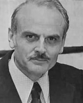
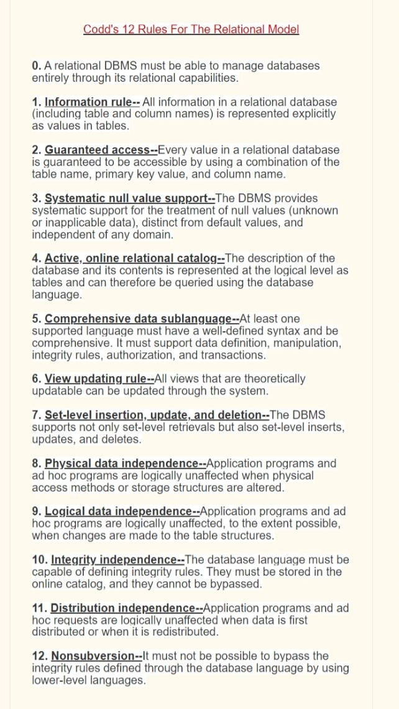

Home Page
Dr. Edgar Frank Codd :-
Edgar Frank "Ted" Codd (19 August 1923 - 18 April 2003) was an English computer scientist who, while working for IBM, invented the relational model for database management, the theoretical basis for relational databases and relational database management systems.
He made other valuable contributions to computer science, but the relational model, a very influential general theory of data management, remains his most mentioned, analyzed and celebrated achievement.

13 rule
codd's 12 rule

Ex :-
Foxpro, Oracle, Mysql, MS.SQL Server etc.
Data Base